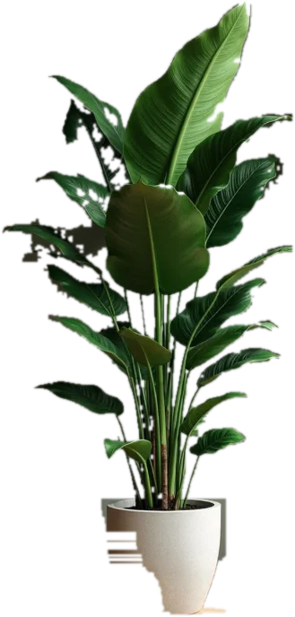

#
idea
-
plan
-
build
-
evaluate
Blog
Kontakt
Home
Joschka
Eickhoff
Konzipieren, Bauen, Repeat
LinkedIn
Lebenslauf (PDF)
Spotify
Blog
#
landingpages
#
entwicklung
#
koordination
#
ai-driven
#
multi-agent
Blog
Schreiben
Blog
Zum Blog
CV
Lebenslauf
CV
Lebenslauf (PDF)
Spotify
Playlist
Alarm on Drugs
Auf Spotify öffnen
Aktuelle Beschäftigung
Verantwortlich für IT und Medientechnik eines Universitätsinstituts mit mehreren Standorten. Key-User für Klinik-IT. Prozessoptimierung, Bedarfsmanagement, technische Leitung von Webinaren und hybriden Events. Aufbau eines Freelancer-Pools.
Technical Operations
✕
Portfolio
Projekte →
✕
Netzwerk
LinkedIn →
✕
Bio
Kontaktdaten
✕
Playlist
Alarm on Drugs
✕